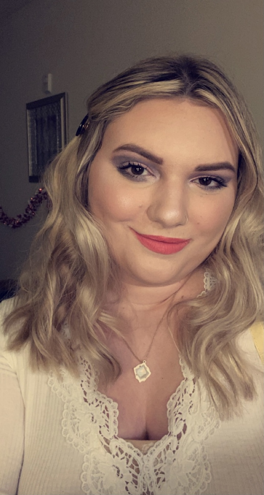

| Howdy! My name is Cassidy Frier and I'm a senior computer science major at Texas A&M University. I have minors in mathematics and cybersecurity. In my free time, I enjoy dancing, spending time with friends, and reading. Before attending Texas A&M University, I spent two years at the University of North Texas as part of the Texas Academy of Math and Science program. This program allowed me to take college courses while still in high school and live on campus in a dorm. I was able to graduate high school with 64 college credit hours and enroll in TAMU as a junior. While at TAMS, I volunteered at the local animal shelter and Denton Teen Court. In my first semester at TAMU, I joined the Society of Women Engineers. I participated in SWENext, a program for high schoolers to explore the different fields of engineering. My work experience throughout my high school and college careers has helped me gain skills that I will take into my career. One summer, I worked as a Teaching Assistant at TAMS's Summer Math Institute. I helped the Algebra II teacher instruct the class and tutored the students one-on-one. During my first year at TAMU, I worked for The Graide Network. I gave individualized feedback to hundreds of students on essays from grades K-12. During my second year at TAMU, I worked for Northpoint Crossing as a leasing agent. This job taught me customer service skills as well as administrative skills. This summer, I'm working as a server at Chili's.. This job has taught me a lot about customer service and working well under pressure. After college, I plan to join the workforce and become a software engineer. |  |